SD卡研究-上篇
前言
SD卡(Secure Digital Memory Card)是一种存储介质，基于NAND闪存技术，作为MMC(Multimedia Card)的替代。一般用于多媒体播放器，相机，手机，随后也大量用于IoT设备和汽车电子。根据SD卡尺寸，可以分为SD、miniSD、microSD。

SD卡的速度等级标准当前在用的有两种，一种是普通速度标记，另一种是UHS速度标记，不同速度标准对应的总线模式也不同。现在SD协会又出了新的速度等级标准：Video Speed Class，使用UHS总线。SD卡的容量也有标准，从SDSC到SDUC。
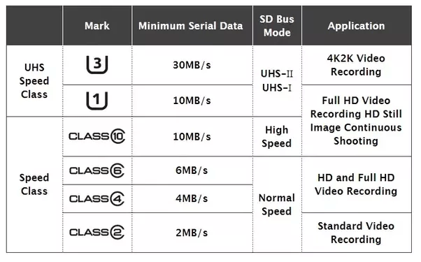
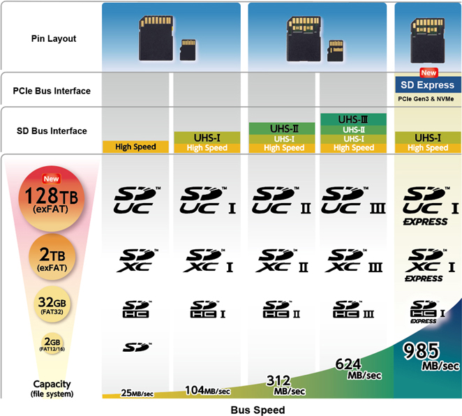
SD卡的参数可以在SD卡的贴纸或者丝印上看到。
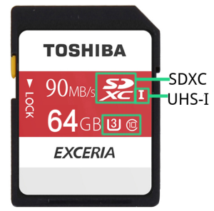
而microSD卡原名是TF卡(Trans-flash Card)，SD插槽兼容MMC卡，也可以通过飞线方式将eMMC接到SD插槽。
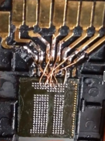
本文基于SD物理层简化规范第六版，主要研究解锁机制。
SDIO(Secure Digital Input Output)是由SD物理层规范修改而来，属于SD规范的扩展，除了支持SDIO规范的储存卡，还支持SDIO外围设备，例如WiFi模块、GPS模块、CMOS传感器模块等。
I/O informations
下面是MMC卡和SD卡引脚的对比
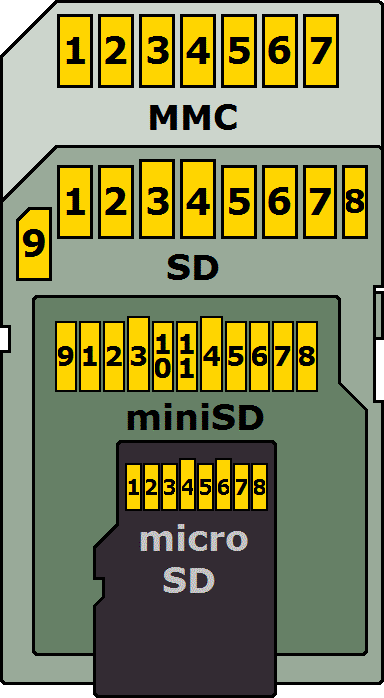
在不同的总线协议和传输模式下，这些引脚都负责不同的功能，本文主要研究SD模式的规范。在Type一栏，有如下定义：
- S - Power Supply
- I - Input
- O - Output using Pull Push Drivers
- PP - I/O using Pull Push Drivers
| Pin # | Name | Type | Description |
|---|---|---|---|
| 1 | CD/DAT3 | I/O/PP | Card Detect/Data Line [Bit3] |
| 2 | CMD | I/O/PP | Command/Response |
| 3 | VSS1 | S | Supply voltage ground |
| 4 | VDD | S | Supply voltage |
| 5 | CLK | I | Clock |
| 6 | VSS2 | S | Supply voltage ground |
| 7 | DAT0 | I/O/PP | Data Line [Bit0] |
| 8 | DAT1 | I/O/PP | Data Line [Bit1] |
| 9 | DAT2 | I/O/PP | Data Line [Bit2] |
下面是我们要研究的SD卡，SDSC，刚好最大2GB，上面印着M2B9 2GB Made in Japan，网上不能搜索到这些信息。
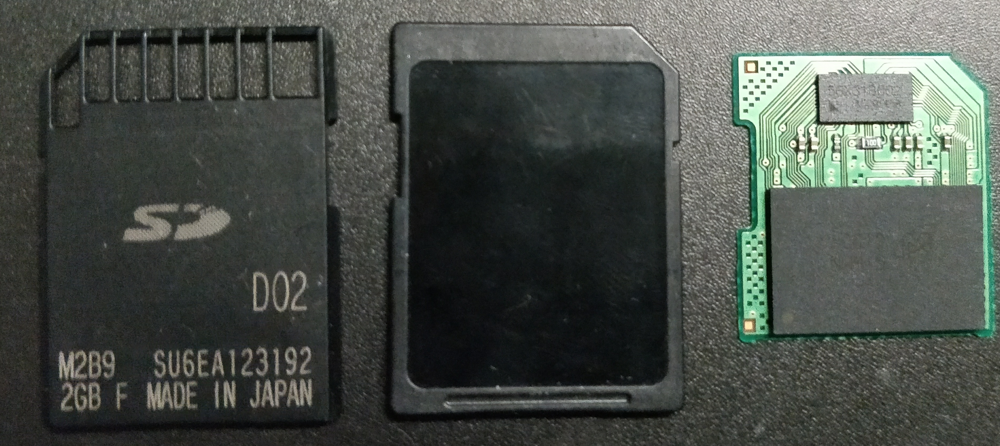
再看SD主控芯片，56X31B002 AC00145R，无法搜索到。
但是下面的存储芯片印有镁光Logo，在FBGA & Component Marking Decoder网站可以查询FPGA Code。是SLC NAND Flash，VBGA100封装，但是官网信息不太准确，只有16GB的版本。

Registers
OCR,CID,CSD,SCR携带了卡的特定信息，RCA和DSR储存着实际的配置参数，SSR和CSR则携带状态信息。
因为规范制定者有强迫症，所以寄存器都是三位缩写，如果三位不能准确表达意思，就把R去掉。
| Name | length(bit) | Description | Optional |
|---|---|---|---|
| CID | 128 | Card Identification Data，包括厂商ID、OEM ID、产品名、产品编号、生产日期以及校验和 | 必选 |
| RCA | 16 | Relative Card Address，用于寻址，默认0x0000，SPI模式下不可用 | 必选 |
| DSR | 16 | Driver Stage Register，用于改善总线性能 | 可选 |
| CSD | 128 | Card Special Data，较为复杂，包含关于卡各种操作的条件信息：错误类型、最大数据访问时间、速率、DSR可用状态等 | 必选 |
| SCR | 64 | SD Configuration Register，包含了SD卡支持的特性，规范版本 | 必选 |
| OCR | 32 | Operation Condition Register，携带了当前电源信息 | 必选 |
| SSR | 512 | SD Status Register，包含当前SD卡特性和应用特性的状态信息，如总线数据宽度、安全模式、SD卡类型、速度等 | 必选 |
| CSR | 32 | Card Status Register，包含了当前卡执行命令的状态信息，体现在响应中，如上锁状态，错误信息等 | 必选 |
Architecture
卡内带有上电检测电路，与主控接口和存储区接口相连，每个引脚和卡主控相连，主控通过存储接口对存储区进行操作。
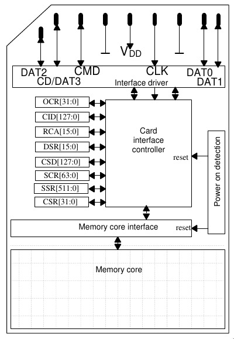
SDIO
而在SDIO规范中，定义了两种类型的SDIO卡：低速卡与高速卡，定义了SDIO卡的三种模式：
- SPI bus mode
- One-bit SD bus mode - 指令和数据分离的传输模式
- Four-bit SD bus mode - 高速卡支持，指令单独占用一个通道，使用另外4通道传输数据，SD卡的默认模式
SD Bus Protocol
SD总线通信主要由CMD(Command Token, 操作命令)、DAT(Data, 数据)组成。CMD和DAT由不同的通道并行传输，CMD和Response走同一条通道，CMD来自Host(上位机)，Response(响应)来自SD卡，Response只针对特定的CMD出现。

SD规定以块为单位进行读写操作，紧随着CMD后出现。每个数据块结尾带有CRC校验位。由终止操作由终止指令完成。
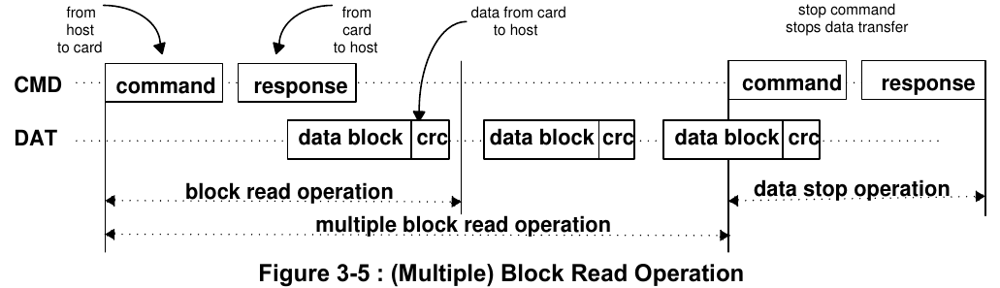
写过程会附带一个busy信号。
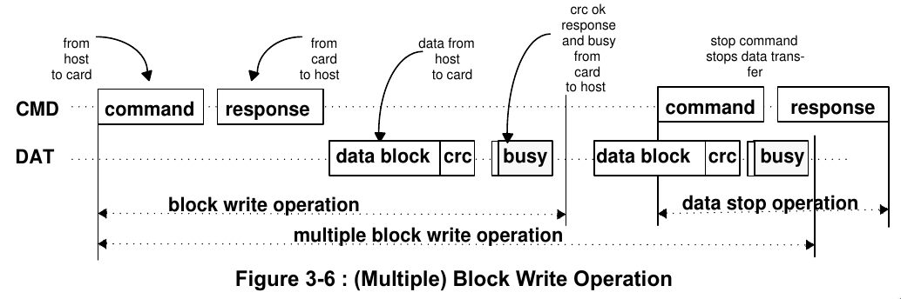
CMD Format
Command Token的长度是48-bit，起始位是0，传输位是1，表示来自Host的数据。Content携带了命令，地址信息以及参数。结尾带有7位的CRC(Cyclic Redundancy Check)，结束位是0。因为这个特性，Response的首个字节比CMD的首个字节小0x40。

Response Token有四种场景，根据场景的不同采用不同的长度，分别是48-bit(R1,R3,R6)，136-bit(R2)。传输位是0，表示来自SD卡的数据。
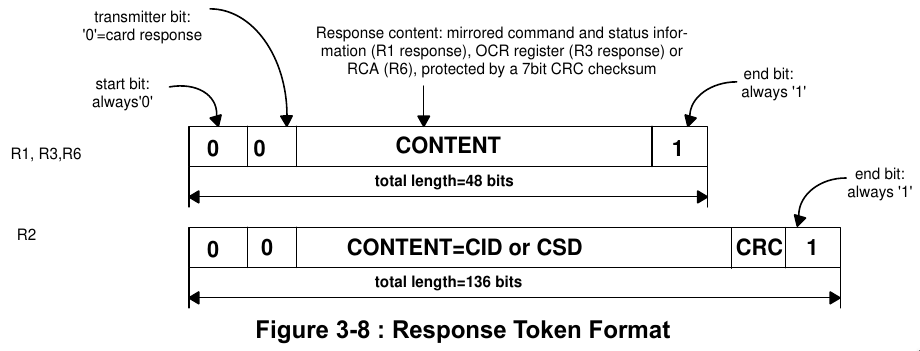
Data Packet Format
通常模式下，数据通过DAT[0-3]引脚传输。和CMD一样，起始位0，结束位1，带有CRC校验。总线宽度默认1-bit。
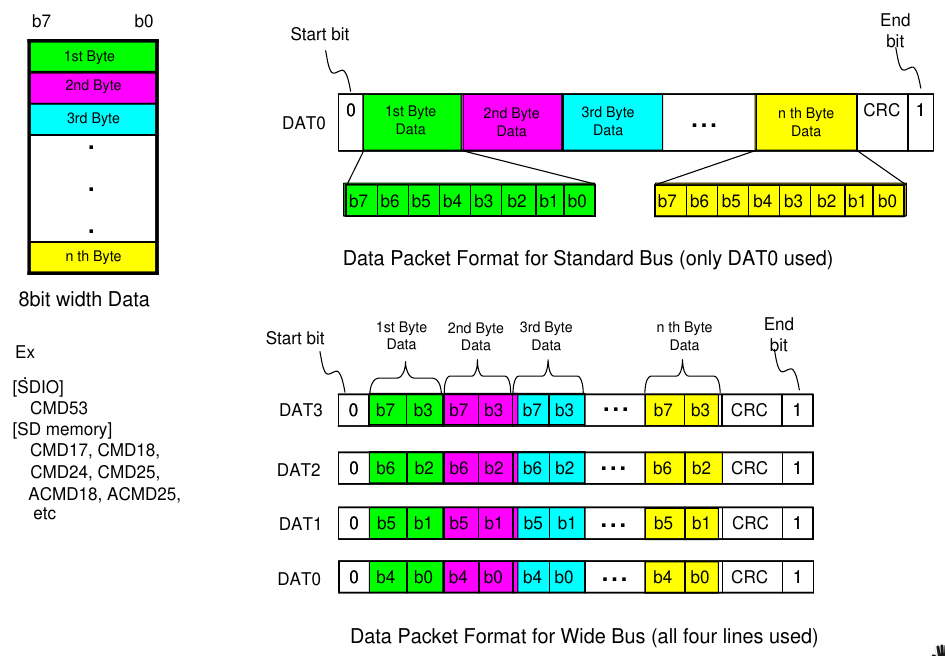
CRC7
SD卡使用CRC7/MMC算法作为CMD的校验，公式如下
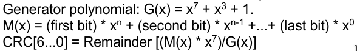
将多项式转化为二进制G(x)
1 | 10001001 |
在数据帧M(x)后补上长度位divisor-1，就是7，使用模2除法，数据帧除以10001001得到CRC
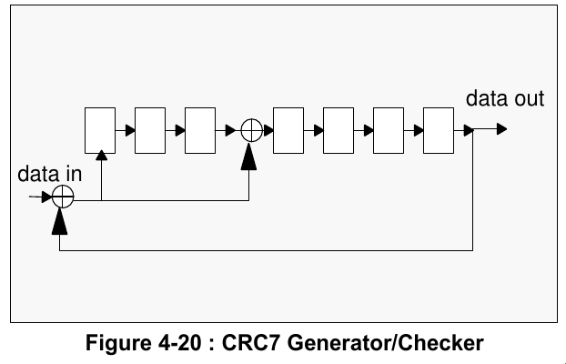
CRC16
SD卡使用CRC-16/CCITT-XMODEM算法作为Data的校验。宽总线模式下每行独立计算CRC，公式如下

将多项式转化为二进制G(x)，第16位超出长度，忽略。
1 | 0001000000100001 |
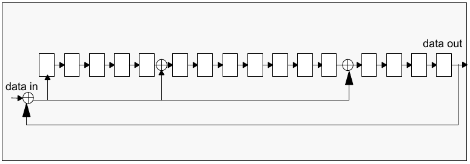
Response Type
SD卡总共有五种类型的响应，SDIO支持附加的响应类型R4，R5。除R3以外，响应包的结尾都有CRC校验。
- R1 正常响应命令，可携带busy信号(R1b)
- R2 CID,CSD响应
- R3 OCR响应
- R6 RCA响应
- R7 卡接口条件响应
不同响应对应的格式
R1的参数部分是32位，对应了卡的状态，由于版本迭代问题，规范里没有明确说是CSR，CSR寄存器也是后面定义的。R2直接返回CID或CSD的数据。R3返回OCR的数据。
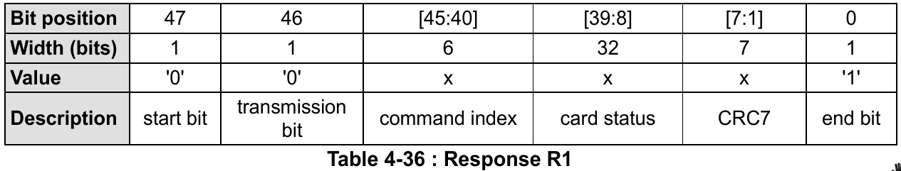

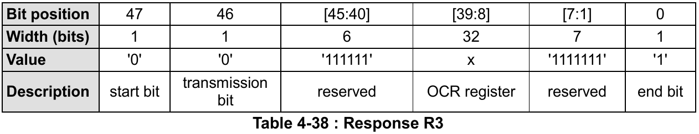


Function mode
SD卡的操作模式有两种种，默认是inactive：
- card indentification mode 卡认证模式
- data transfer mode 数据传输模式
UHS-II下和SD模式下，卡认证模式不同。
Command
Command主要有两种类型————广播和寻址，具体细分有如下四种:
- broadcast commands (bc), no response
- broadcast commands with response (bcr) (Note: No open drain on SD card)
- addressed (point-to-point) commands (ac), no data transfer on DAT lines
- addressed (point-to-point) data transfer commands (adtc), data transfer on DAT lines
CMD5，CMD52-54是SDIO特有的模式
最高有效位(Most Significant Bit, MSB)在前，最低有效位(Least Significant Bit, LSB)在后。

有如下分类：
Class # | Name
—|—
0 | Basic Commands
1 | Command and Queue Function Commands
2 | Block Oriented Read Commands
3 | Reversed
4 | Block Oriented Write Commands
5 | Erase Commands
6 | Block Oriented Write Protection Commands
7 | Lock Card
8 | Application Specific Commands
9 | I/O Mode Commands
10 | Switch Function Commands
11 | Function Extension Commands
Class 7 锁卡相关命令有三个，其中CMD16设定块长度，用来设置密码。CMD42进行上锁/解锁操作。上锁状态的卡可以响应Class 0的命令.
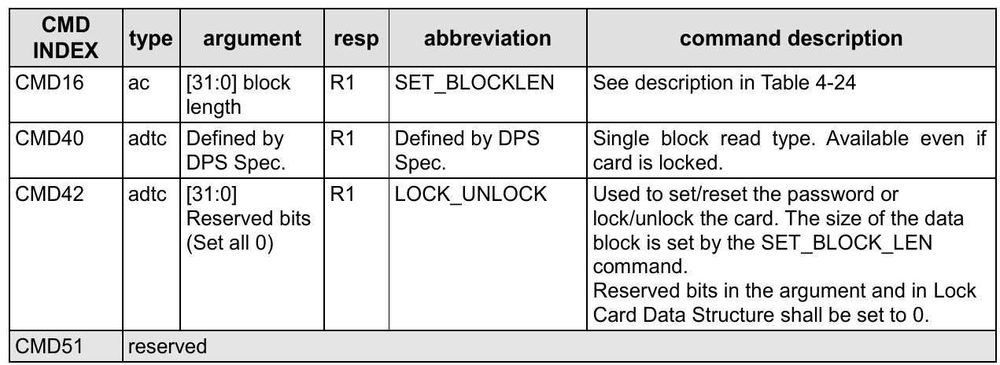
在SDSC卡中，可通过SET_BLOCK_LEN来指定数据的块长度。而在SDHC和SDXC卡中，块长度固定为512bytes。
Application-Specific Commands
Application-Specific Commands是Commands的扩展，CMD55是触发ACMD的条件，ACMD41也就是CMD55接一个CMD41。
ACMD41是初始化命令，设定HCS(Host Capacity Support)，决定SD卡的类型，电源控制以及电平。ACMD6是设置总线宽度，决定使用1-bit还是4-bits的Data传输。只有未解锁和传输状态才能使用ACMD6。
Status Information
SD卡状态信息可以在R1类型的响应里看到，比如CMD13，SD卡有三种状态信息：
- SD Status
- Card Status
- Task Status
下面是每一位的类型定义：
E - Error bit
S - Status bit
R - Detected and set for the actual command response
X - Detected and set during command execution. 上位机可以通过执行命令的响应获得状态信息
还有状态位的清除条件：
A - According to the card current status.
B - Always related to the previous command. 发送特定CMD来清除
C - Clear by read.
R1响应携带卡状态信息，长度32-bit，储存在CSR。下面是CSR每一位的定义，预留位已经省略。
| Bits | Identifier | Type | Value | Description | Clear Condition |
|---|---|---|---|---|---|
| 31 | OUT_OF_RANGE | E R X | ‘0’= no error ‘1’= error |
The command’s argument was out of the allowed range for this card. | C |
| 30 | ADDRESS_ERROR | E R X | ‘0’= no error ‘1’= error |
A misaligned address which did not match the block length was used in the command. | C |
| 29 | BLOCK_LEN_ERROR | E R X | ‘0’= no error ‘1’= error |
The transferred block length is not allowed for this card, or the number of transferred bytes does not match the block length. | C |
| 28 | ERASE_SEQ_ERROR | E R | ‘0’= no error ‘1’= error |
An error in the sequence of erasecommands occurred. | C |
| 27 | ERASE_PARAM | E R X | ‘0’= no error ‘1’= error |
An invalid selection of write-blocksfor erase occurred. | C |
| 26 | WP_VIOLATION | E R X | ‘0’= no protected ‘1’= protected |
Set when the host attempts to writeto a protected block or to the temporary or permanent write protected card. | C |
| 25 | CARD_IS_LOCKED | S X | ‘0’= card unlocked ‘1’= card locked |
When set, signals that the card is locked by the host. | A |
| 24 | LOCK_UNLOCK_FAILED | E R X | ‘0’= no error ‘1’= error |
Set when a sequence or passworderror has been detected in lock/unlock card command. | C |
| 23 | COM_CRC_ERROR | E R | ‘0’= no error ‘1’= error |
The CRC check of the previous command failed. | B |
| 22 | ILLEGAL_COMMAND | E R | ‘0’= no error ‘1’= error |
Command not legal for the cardstate | B |
| 21 | CARD_ECC_FAILED | E R X | ‘0’= no error ‘1’= error |
Card internal ECC was applied butfailed to correct the data. | C |
| 20 | CC_ERROR | E R X | ‘0’= no error ‘1’= error |
Internal card controller error. | C |
| 19 | ERROR | E R X | ‘0’= no error ‘1’= error |
A general or an unknown error occurred during the operation. | C |
| 16 | CSD_OVERWRITE | E R X | ‘0’= no error ‘1’= error |
Can be either one of the following errors: - The read only section of the CSD does not match the card content. - An attempt to reverse the copy (set as original) or permanent WP (unprotected) bits was made. |
C |
| 15 | WP_ERASE_SKIP | E R X | ‘0’= no protected ‘1’= protected |
Set when only partial address space was erased due to existing write protected blocks or the temporary or permanent write protected card was erased. | C |
| 14 | CARD_ECC_DISABLED | S X | ‘0’= enabled ‘1’= disabled |
The command has been executed without using the internal ECC. | A |
| 13 | ERASE_RESET | S R | ‘0’= cleared ‘1’= set |
An erase sequence was cleared before executing because an out of erase sequence command was received. | C |
| 12:9 | CURRENT_STATE | S X | 0 = idle 1 = ready 2 = ident 3 = stby 4 = tran 5 = data 6 = rcv 7 = prg 8 = dis 9-14 = reserved 15 = reserved for I/O mode |
The state of the card when receiving the command. If the command execution causes a state change, it will be visible to the host in the response to the next command. The four bits are interpreted as a binary coded number between 0 and 15. |
B |
| 8 | READY_FOR_DATA | S X | ‘0’= not ready ‘1’= ready |
Corresponds to buffer empty signaling on the bus. | A |
| 6 | FX_EVENT | S X | ‘0’= No event ‘1’= Event invoked |
Extension Functions may set this bit to get host to deal with events. | A |
| 5 | APP_CMD | S R | ‘0’= enabled ‘1’= disabled |
The card will expect ACMD, or an indication that the command has been interpreted as ACMD. | C |
| 3 | AKE_SEQ_ERROR(SD Memory Card app. spec.) | E R | ‘0’= no error ‘1’= error |
Error in the sequence of the authentication process. | C |
12:9是4位长度，转成10进制，对应着卡的操作阶段
Reference
SD Simplified Specifications
Wiki - Secure_Digital
SD Standard Overview